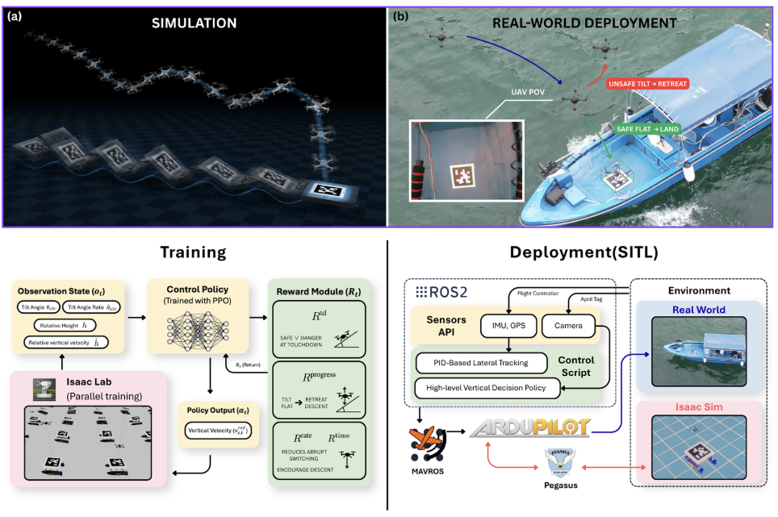
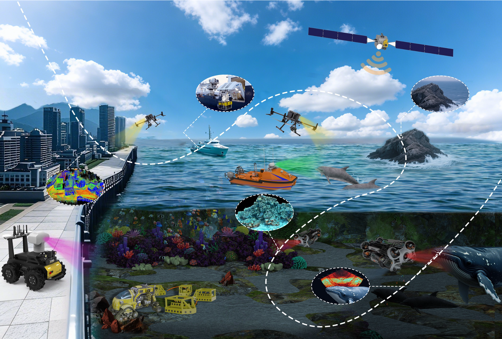

|
Jacky, Li Chun Kit
李 俊杰 Jacky Li
李俊杰 Jacky Li
李俊杰 Jacky Li
Hello World! I am Jacky Li, an undergraduate student at
The Hong Kong University of Science and Technology. I am
affiliated with the
Cheng Kar-Shun Robotics Institute and the Multi-Agent Systems
Laboratory, where I am fortunate to work closely with
Prof. Ling Shi.
Previously, I was a Visiting Student Researcher at
UC Berkeley’s
MSC Lab, advised by
Prof. Masayoshi Tomizuka. I
continue this collaboration remotely, with much of my current effort devoted to our ongoing work.
My research focuses on reinforcement learning, learning-based control, multi-agent systems, and robotics.
I am particularly interested in developing learning-based methods for unmanned robotic systems
operating in complex real-world environments.
Alongside my research, I am part of
Universpirit
and co-founded NaviHK.
香港科技大学
の学部生、Jacky Li です。
現在、
Cheng Kar-Shun Robotics Institute
および Multi-Agent Systems Laboratory に所属し、
Prof. Ling Shi
のご指導のもとで研究に取り組んでいます。
以前、
UC Berkeley
の
MSC Lab
に訪問学生研究員として滞在し、
Prof. Masayoshi Tomizuka
にご指導いただきました。現在も遠隔で共同研究を続けており、進行中の研究に多くの時間と力を注いでいます。
研究テーマは、強化学習、学習ベース制御、マルチエージェントシステム、ロボティクスです。
とくに、実環境で動作する無人ロボットシステムに対する学習ベース手法の設計に関心があります。
研究活動と並行して、
Universpirit
にも参画し、NaviHK を共同創業しました。
我是李俊杰 Jacky Li，是
香港科技大学
的本科生，
我主要在
郑家纯机器人研究院
和多智能体系统实验室从事研究，很荣幸得到
施凌教授
的支持与指导。
此前，我曾在
加州大学伯克利分校
的
MSC Lab
担任访问学生研究员，由美国国家工程院院士
Masayoshi Tomizuka 教授
指导。目前我仍以远程形式继续这项合作，并将大部分精力投入正在进行的研究。
我的研究兴趣包括强化学习、学习型机器人控制、多智能体系统，尤其关注复杂真实环境下无人系统的控制与协作。
在推进科研项目的同时，我也参与
宏宇創新
的公司发展工作，并共同创办了 NaviHK。
我是李俊杰 Jacky Li，是
香港科技大學
的本科生，
我主要在
鄭家純機器人研究院
和多智能體系統實驗室從事研究，很榮幸得到
施凌教授
的支持與指導。
此前，我曾在
加州大學伯克利分校
的
MSC Lab
擔任訪問學生研究員，由美國國家工程院院士
Masayoshi Tomizuka 教授
指導。目前我仍以遠程形式繼續這項合作，並將大部分精力投入正在進行的研究。
我的研究興趣包括強化學習、學習型機器人控制、多智能體系統，尤其關注複雜真實環境下無人系統的控制與協作。
在推進科研項目的同時，我也參與
宏宇創新
的公司發展工作，並共同創辦了 NaviHK。
Email /
Scholar /
Github /
Linkedin
|
|
Seeking Summer 2027 Research Internships globally. I am particularly interested
in
robot learning, world models,
and simulation, especially sim-to-real transfer and learning-based control. Please feel free to reach out.
世界各地で2027年夏のリサーチインターンシップを希望しています。特に、ロボット学習、世界モデル、シミュレーション、なかでも sim-to-real 転移と学習ベース制御に関心があります。ぜひご連絡ください。
正在全球范围内寻找 2027 年暑期科研实习机会。我尤其关注机器人学习、世界模型与仿真，特别是虚实迁移和基于学习的控制。欢迎与我联系。
正在全球尋找 2027 年暑期研究實習機會。我尤其關注機械人學習、世界模型與模擬，特別是模擬至現實遷移及學習型控制。歡迎與我聯絡。
Recent News
最新情報
最新消息
最新消息
|
-
[10/2026] WaveLander was featured in the
research showcase
of HKUST's Center for Marine Intelligence (CMI).
-
[10/2026] WaveLander が、HKUSTの
Center for Marine Intelligence (CMI)
の研究ショーケースで紹介されました。
-
[10/2026] WaveLander 在香港科大
海洋智能中心（CMI）
的官网作为代表研究展示。
-
[10/2026] WaveLander 在香港科大
海洋智能中心（CMI）
的官網作為代表研究展示。
-
[10/2026] I will spend the next semester as an exchange student at
Peking University.
-
[10/2026] 来学期は
北京大学
に交換留学生として留学します。
-
[10/2026] 下学期，我会到
北京大学
当交换生。
-
[10/2026] 下學期，我會到
北京大學
當交換生。
-
[08/2026] Our paper WaveLander was accepted by ICARCV 2026 and selected for an oral presentation.
-
[08/2026] 私たちの論文 WaveLander は ICARCV 2026 に採択され、口頭発表に選ばれました。
-
[08/2026] 我们的论文 WaveLander 被 ICARCV 2026 接收，并被选为口头报告。
-
[08/2026] 我們的論文 WaveLander 被 ICARCV 2026 接受，並被選為口頭報告。
-
[06/2026] I will join the
MSC Lab
at UC Berkeley, working on world models for robot control.
-
[06/2026] UC Berkeley の
MSC Lab
に参加し、ロボット制御のためのワールドモデル研究に取り組みます。
-
[06/2026] 我将加入 UC Berkeley 的
MSC Lab
，开展机器人控制的世界模型研究。
-
[06/2026] 我將加入 UC Berkeley 的
MSC Lab
，開展機器人控制的世界模型研究。
-
[06/2026] I received the HKSAR Government Scholarship 2026.
-
[06/2026] HKSAR Government Scholarship 2026 を受給しました。
-
[06/2026] 我获得香港特区政府奖学金2026。
-
[06/2026] 我獲得香港特區政府獎學金2026。
-
[05/2026] I was featured on CCTV News.
(image)
-
[05/2026] CCTV NEWSに取り上げていただきました。
(画像)
-
[05/2026] 我接受了央视新闻采访。
(图片)
-
[05/2026] 我接受了央視新聞採訪。
(圖片)
|
|

|
WaveLander: A Generalizable Hierarchical Control Framework for UAV Landing on
Wave-Disturbed Platforms via Reinforcement Learning
Chun-Kit Li,
Iok Long Sit,
Ming Fung Siu,
Ka Yu Kui,
Hin Wang Lin,
Pengyu Wang,
and Ling Shi
Accepted by ICARCV2026 · Oral Presentation
|
|

|
Heterogeneous Multi-Robot Systems for Intelligent Marine Life and Environment Monitoring
Pengyu Wang,
LIN Hin Wang,
Chun Kit Li,
Fan Zhang,
Ka Yu Kui,
Xiawei Du,
Ying Hing Yim,
Jialu Li,
and Ling Shi
Ongoing project, 2025
|

|
Enhancing UAV Control and Features with AI integration
Li Chun Kit,
Leung Ka Chun,
Prof. SHI Ling
USEL project, 2024
|
Undergraduate Student
Major: BSc Math-CS, Minor in Robotics
学部生
専攻：数学・計算機科学、副専攻：ロボティクス

Exchange Student (Spring Term 2027)

Visiting Student Researcher
Selected Coursework: CS 188 Artificial Intelligence; MECENG 132 Dynamic Systems and Feedback
訪問学生研究員
履修科目：CS 188 Artificial Intelligence; MECENG 132 Dynamic Systems and Feedback
访问学生研究员
修读课程：CS 188 Artificial Intelligence; MECENG 132 Dynamic Systems and Feedback
訪問學生研究員
修讀課程：CS 188 Artificial Intelligence; MECENG 132 Dynamic Systems and Feedback
Undergraduate Student
Admitted to the BEng (Hons)/BSc (Hons) Scheme in Information and Artificial Intelligence Engineering
Completed one semester before transferring to HKUST to further pursue my research interests.
学部生
「情報・人工知能工学 BEng（Hons）／BSc（Hons）課程」に入学
1学期を修了後、香港科技大学へ転学
本科生
获“信息及人工智能工程学（荣誉）工学士／理学士组合课程”录取
完成一个学期后转学至香港科技大学
本科生
獲「資訊及人工智能工程學（榮譽）工學士／理學士組合課程」取錄
完成一個學期後轉學至香港科技大學
Selected Honors and Awards
主な受賞歴
部分荣誉与奖项
部分榮譽與獎項
|
-
HKSAR Government Scholarship, TDS in Innovation, Science and Technology
2026
-
HKSAR Government Scholarship, TDS in Innovation, Science and Technology
2026
-
香港特区政府奖学金，TDS 创新科技
2026
-
香港特區政府獎學金，TDS 創新科技
2026
-
National Second Prize, 19th Challenge Cup" National Academic Science and Technology
Competition
2025
-
National Second Prize, 19th Challenge Cup National Academic Science and Technology Competition
2025
-
全国二等奖，第十九届「挑战杯」全国大学生课外学术科技作品竞赛
2025
-
全國二等獎，第十九屆「挑戰杯」全國大學生課外學術科技作品競賽
2025
-
National Silver Award, China International College Students’ Innovation
Competition
2025
-
National Silver Award, China International College Students’ Innovation Competition
2025
-
全国银奖，中国国际大学生创新大赛
2025
-
全國銀獎，中國國際大學生創新大賽
2025
-
Gold Award, Indonesia Inventors Day 2025 World Invention and Technology Expo
(WINTEX)
2025
-
Gold Award, Indonesia Inventors Day 2025 World Invention and Technology Expo (WINTEX)
2025
-
金奖，Indonesia Inventors Day 2025 世界发明科学展2025 WINTEX
2025
-
金獎，Indonesia Inventors Day 2025 世界發明科學展2025 WINTEX
2025
-
Best International Invention & Innovation Award, National Research Council of
Thailand
2025
-
Best International Invention & Innovation Award, National Research Council of Thailand
2025
-
最佳国际发明与创新专项奖，泰国国家研究委员会 NRCT
2025
-
最佳國際發明與創新專項獎，泰國國家研究委員會 NRCT
2025
-
Second Prize, The 11th Hong Kong University Student Innovation & Entrepreneurship
Competition
2025
-
Second Prize, The 11th Hong Kong University Student Innovation & Entrepreneurship Competition
2025
-
二等奖，第十一届香港大学生创新及创业大赛
2025
-
二等獎，第十一屆香港大學生創新及創業大賽
2025
-
HKUST Student Team Award, HKUST–SINO One Million Dollar Entrepreneurship
Competition
2025
-
HKUST Student Team Award, HKUST–SINO One Million Dollar Entrepreneurship Competition
2025
-
香港科技大学学生团队奖，科大- 信和百万奖金创业大赛
2025
-
香港科技大學學生團隊獎，科大- 信和百萬獎金創業大賽
2025
|
Collaborators
コラボレーター
合作伙伴
合作夥伴
|
I have been fortunate to learn from and work alongside the following brilliant minds. This is
not an exhaustive list.
以下の素晴らしい方々から学び、共に活動できたことを光栄に思います。これはすべてを網羅した一覧ではありません。
我很荣幸能够向以下优秀伙伴学习，并与他们并肩合作。此名单并非完整列表。
我很榮幸能夠向以下優秀夥伴學習，並與他們並肩合作。此名單並非完整列表。
|
I was born in Hong Kong 🇭🇰. I am fluent in English, Cantonese, and Mandarin, and I can also
speak and understand Japanese.
I enjoy mathematics. I am not gifted at it; I simply love its logic—the journey from axioms to
proofs—and the beauty and elegance of mathematical tools. As a small piece of mathematical
trivia, my Erdős number is 4 (see the Erdős Number Project).
My mother is a teacher. Perhaps I inherited a knack for it: I have felt at ease presenting
ideas since childhood, and I am quite good at explaining concepts and teaching others.
香港で生まれました 🇭🇰。英語、広東語、普通話を流暢に話し、日本語も話したり聞き取ったりできます。
私には数学の才能があるわけではありません。それでも数学が好きなのは、公理から証明へと至る論理、そして数学的な道具が持つ美しさとエレガンスに惹かれているからです。ちなみに、私のエルデシュ数は4です（Erdős Number Project を参照）。
母は教師です。その影響もあってか、幼い頃から人前で考えを伝えることが得意で、概念を分かりやすく説明したり人に教えたりすることにも自信があります。
我在中国香港出生，是土生土长的香港人🇭🇰。我能流利使用英语、广东话和普通话，也会说和听日语。
我喜欢数学。虽然谈不上有什么天赋，但我很享受从公理出发、一步步走到证明的逻辑，也着迷于数学工具的优美与精妙。顺带一提，我的 Erdős number（埃尔德什数）是 4（参见 Erdős Number Project）。
我母亲是一位老师。也许受她影响，我从小就善于在人前表达，也擅长把概念讲清楚、教给别人。
我在中國香港出生，是土生土長的香港人🇭🇰。我能流利使用英語、廣東話和普通話，也會說和聽日語。
我喜歡數學。雖然談不上有甚麼天賦，但我很享受從公理出發、一步步走到證明的邏輯，也著迷於數學工具的優美與精妙。順帶一提，我的 Erdős number（埃爾德什數）是 4（參見 Erdős Number Project）。
我母親是一位老師。也許受她影響，我從小就善於在人前表達，也擅長把概念講清楚、教給別人。
|
Global Visitor Stats
世界の訪問者統計
全球访客统计
全球訪客統計
|
|
Website template stolen from Jon Barron, with gratitude
Last updated: Oct 2026
本ウェブサイトは Jon Barron 氏のテンプレートを参考に作成しました。深く感謝申し上げます。
最終更新：2026年10月
网站模板来自 Jon Barron，在此致谢。
最后更新：2026年10月
網站模板來自 Jon Barron，在此致謝。
最後更新：2026年10月
|
|